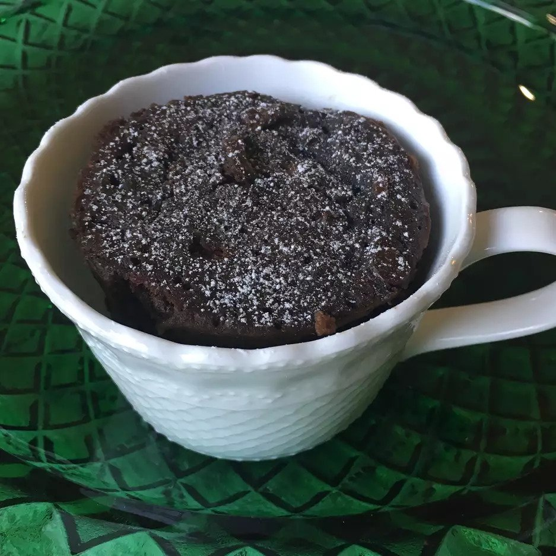

Vegan Mug Brownie

Description
Sometimes you just need a little chocolatey goodness to cap off your day. This recipe is both quick and easy, ensuring you'll be able to do it even after the hardest week in the office.
Ingredients
- ¼ cup whole wheat flour
- 2 teaspoons white sugar, or to taste
- 2 teaspoons unsweetened cocoa powder
- ¼ teaspoon baking soda
- 1 pinch salt
- ¼ cup water
- 2 tablespoons canola oil
- ⅛ teaspoon vanilla extract
- 2 teaspoons vegan chocolate chips (such as Enjoy Life®)
Steps
- Whisk whole wheat flour, white sugar, cocoa powder, baking soda, and salt together in a microwave-safe mug. Stir in water, canola oil, and vanilla extract. Fold in chocolate chips.
- Microwave until fully cooked, 50 seconds to 1 minute.